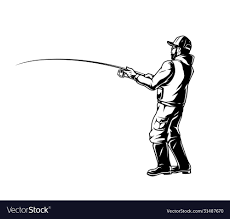

Welcome to Juan's Pond!
Welcome to my fishing pond. The pond is right beside my house and is located in Jasper, Tennessee. This is a 1 acre pond that is very fun to fish at with your friends or family.

Juan's Pond Media
Here are videos that can help you learn the basics of fishing. Watching these videos can help you be perpare for your fishing trip.
 Learn More...Juan's Pond Gallery
Here are some images of the area. It is a great spot to enjoy some time outside with friends or family. It is also a great area to take pictures at.
 Learn More...
Learn More...
Juan's Pond Blog
This pond is located on the top of the mountian. With 25 acre of beautiful land to explore and take pictures. We try our hardest to keep the area clean.
Learn More...